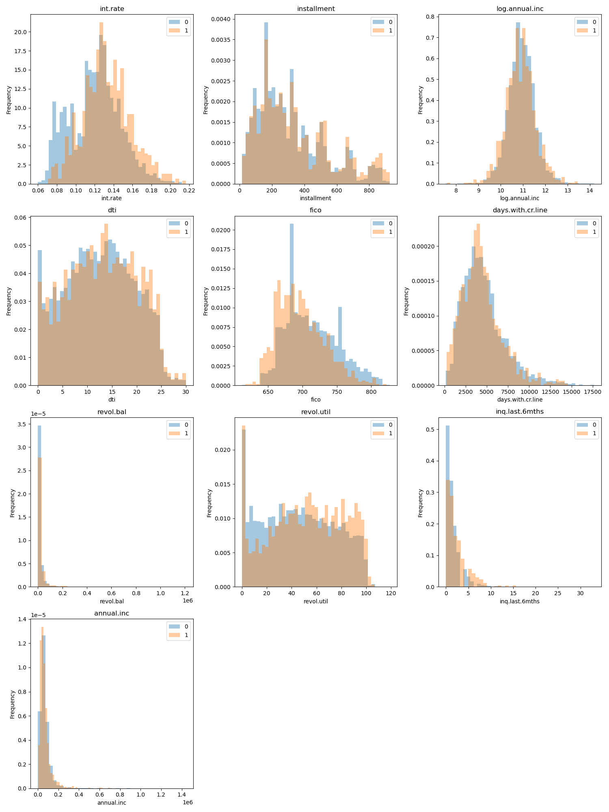
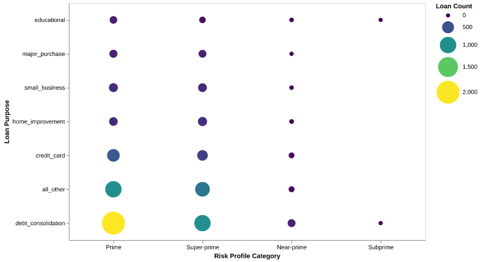
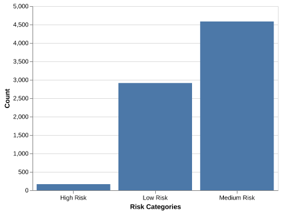
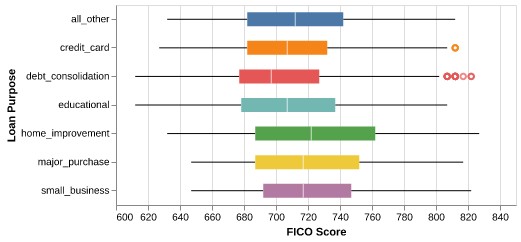
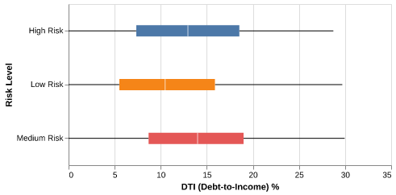
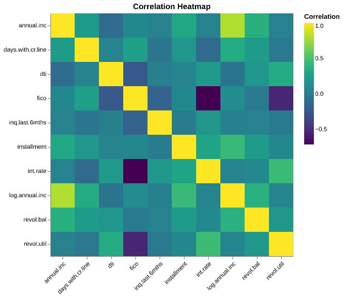
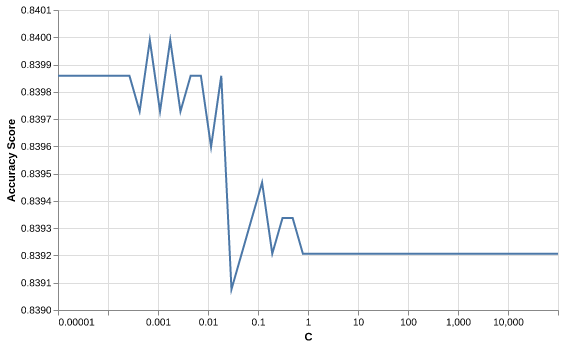

| Column | Non-Null | Dtype | |
|---|---|---|---|
| 0 | credit.policy | 7662 | int64 |
| 1 | purpose | 7662 | object |
| 2 | int.rate | 7662 | float64 |
| 3 | installment | 7662 | float64 |
| 4 | log.annual.inc | 7662 | float64 |
| 5 | dti | 7662 | float64 |
| 6 | fico | 7662 | int64 |
| 7 | days.with.cr.line | 7662 | float64 |
| 8 | revol.bal | 7662 | int64 |
| 9 | revol.util | 7662 | float64 |
| 10 | inq.last.6mths | 7662 | int64 |
| 11 | delinq.2yrs | 7662 | int64 |
| 12 | pub.rec | 7662 | int64 |
| 13 | not.fully.paid | 7662 | int64 |
P2P Online Lending Default Prediction- A Usecase on LendingClub Default Risk
1. Summary
This work intends to leverage machine learning models to predict borrower behavior and, hence, the probability of default. More specifically, the work focuses on predicting loan defaults using historical data from the Lending Club platform. We uncover patterns and trends in borrower risk profiles by applying advanced preprocessing techniques, exploratory data analysis (EDA), and a Logistic Regression model. The final model demonstrated strong performance on unseen test data, achieving an accuracy of 84.0%. Out of 1,916 test cases, the model correctly predicted 1,608 cases, with 308 incorrect predictions. These errors included both false positives (predicting a loan default when it didn’t occur) and false negatives (failing to predict an actual default). While false negatives pose a greater risk in financial decision-making, this model provides actionable insights to improve risk management and reduce potential financial losses for the platform. Despite its promising predictive capabilities, further research is needed to enhance the model’s accuracy and better understand the characteristics of misclassified loans. Such improvements could play a crucial role in minimizing financial risks and maximizing the model’s effectiveness in peer-to-peer lending platforms
2. Introduction
Crowd-based business models are one of the last decade’s developments with the proliferation of platform economies and web technology applications (Sutherland and Jarrahi 2018). One of such developments following the 2007 financial crisis are the P2P online lending platforms. The backbone of the digital economic system built on this relies on trust as a currency. Like all other crowd-based business models, P2P online lending heavily relied on the trustworthiness of borrowers (Lenz 2016). To help with this, online platforms like LendingClub used several features to define eligibility and rate of access to loans for potential borrowers. Traditional credit risk analysis often relies on rule-based systems or credit scores, which might not fully capture the complexities of borrower behavior. By applying Logistic Regression, we aim to develop a model that is both interpretable and effective in identifying high-risk loans, see (Khandani, Kim, and Lo 2010). This analysis intends to provide a data-driven approach to improve credit decision-making in a broader context of platform-based transactions through machine learning models.
Extensive research has been conducted on borrower risk behavior analysis and trust within P2P online lending systems, highlighting the critical role of trust and predictability in ensuring platform sustainability and mitigating default risks (Cai et al. 2016). Building on these, this work focuses on developing a comprehensive risk analysis framework through machine learning models that will help predict borrower behavior.
This work will address the following research questions. - How do borrower characteristics influence the probability of default in a P2P online lending settings? - What techniques can improve machine learning models for predicting defaults in the presence of class imbalance?
3. Methods
3.1 Data Source
This analysis is based on the historical loan data from LendingClub (matmcreative 2024). It contains various borrower and loan features, such as interest rates, annual income, debt-to-income ratio (DTI), and credit history. The target variable, not.fully.paid, indicates whether the borrower defaulted on the loan (1) or successfully repaid it (0).
3.2 Feature Description
The key features taken into account for this analysis are shown below (See Table 1):
| Variable | Description |
|---|---|
purpose |
The purpose of the loan |
int.rate |
Interest rate of the loan the applicant received |
installment |
Monthly payment for the loan the applicant received |
log.annual.inc |
Annual income (growth rate) |
dti |
Debt-to-income ratio |
revol.bal |
Total credit revolving balance |
revol.util |
Revolving line utilization rate |
inq.last.6mths |
The number of inquiries in the past 6 months |
delinq.2yrs |
Delinquencies on lines of credit in the last 2 years |
pub.rec |
The number of derogatory public records |
fico |
FICO credit score |
days.with.cr.line |
Days with Credit Line |
not.fully.paid |
Binary response on whether the loan is paid or not |
4. Analysis
Python (Van Rossum and Drake 2009) language was used to conduct this analysis as well as the following packages: pandas(team 2020), numpy(Harris et al. 2020), matplotlib(Hunter 2007), altair(VanderPlas 2018), sklearn(Pedregosa et al. 2011).
4.1 Exploratory Data Analysis
In order for us to draw context about the data, let us have a look at the first few rows of the data; check the info about all columns, data types, and number of NaN values (Table 2).
To evaluate the usefulness of predictors for identifying loan defaults, we conducted an exploratory data analysis. (Figure 1)
Features such as int.rate (interest rate) and dti (debt-to-income ratio) displayed notable differences between borrowers who fully paid their loans and those who defaulted. For example, loans with higher interest rates (int.rate) were associated with a greater likelihood of default, while borrowers with lower debt-to-income ratios (dti) were less likely to default.
Here, from a business perspective, we need to identify high-risk and low-risk loan profiles to improve lending profitability while minimizing default rates. This includes assessing borrower behavior, income stability, and loan utilization to create a predictive model for effective risk categorization (Coşer, Maer-Matei, and Albu 2019).

Defaulted(1) and Fully Paid(0)
Here are some key metrics and considerations:
Debt-to-Income Ratio
Credit Utilization Ratio( revol.util): how much of their revolving credit borrowers are using relative to their limit with higher values indicating possible financial strain.
Loan Duration vs. Risk: If longer-term loans are associated with higher default rate (days.with.cr.line).
4.1.1 Loan categories
Below, to help us create the loan categories, we are using the FICO risk profile categories (Consumer Financial Protection Bureau 2024) See also (myFICO 2024) and (Equifax 2024) for details on different ranges of credit.
Deep subprime (credit scores below 580)
Subprime (credit scores of 580-619)
Near-prime (credit scores of 620-659)
Prime (credit scores of 660-719)
Super-prime (credit scores of 720 or above)
Categorical features like purpose also provided significant insights (Figure 2): loans categorized under “small business” and “credit card” showed higher default rates compared to others, such as “home improvement.”

4.1.2 Risk categories
Let us explore the data further with specific borrower risk profile categories. Based on the above five loan categories, we framed three main risk categories as high, medium and low-risk profiles with:
Low Risk: credit score of at least 720
Medium Risk: credit score between 650 and 720
High Risk: credit score of 650.

From Figure 3, we observed a high concentration of loans in the medium-risk category and a significant number of low-risk borrowers compared to the high-risk borrowers.
4.1.3 Descriptive Analysis

From Figure 4, we see that the low-risk borrowers have a lower average debt-to-income ratio as compared to the borrowers with medium and high-risk profiles, based on their fico score. Note also the outliers in FICO scores for the loan purpose of debt consolidation type.

From Figure 5, we see that the low risk borrowers have lower average debt-to-income-ratio as compared to the borrowers with medium and high risk profile, based on their fico score. Note also the outliers in FICO scores for the loan purpose of debt consolidation type.
4.1.4 Correlation Analysis
The EDA for most of the numerical columns produces no strong general trends. We see a higher correlation level between fico and revo.util, and that of fico and interest rate. (Figure 6)

4.2 Model Building
4.2.1 Data Splitting
The dataset was split into training (80%) and test (20%) sets, resulting in 1916 observations in the test set. All numeric features were standardized using standardscaler, while categorical features were preprocessed using one-hot encoding before model fitting. Any missing values were imputed using the median for numeric features or the most frequent value for categorical features.
4.2.2 Classification Metrics
We decided to use the accuracy score as the classification metric. In financial decision-making, while false negatives impose greater financial risk to the platform, false positives can impose great financial strain on the borrower. Therefore, it is essential to identify both defaulted and fully paid loans correctly.
4.2.3 Model Selection
To decide on the most suitable classification model to build on, we have conducted a 10-fold cross-validation on four different classification models: DecisionTree, kNN-neighbours, SVC, and Logistic Regression.
| fit_time | score_time | test_score | train_score |
|---|---|---|---|
| 0.111(+/-0.011) | 0.004(+/-0.001) | 0.737(+/-0.016) | 1.000(+/-0.000) |
| 0.016(+/-0.001) | 0.026(+/-0.042) | 0.823(+/-0.008) | 0.855(+/-0.001) |
| 1.485(+/-0.027) | 0.130(+/-0.002) | 0.841(+/-0.002) | 0.845(+/-0.000) |
| 0.026(+/-0.005) | 0.003(+/-0.000) | 0.839(+/-0.003) | 0.840(+/-0.000) |
Table 3 shows the mean validation score and training score for each model. We can see that the decision tree model has a much smaller cross-validation score compared to the other three models.
While the SVC model has a slightly larger test score than the logistic model, it requires a significantly longer computation time. Since the test score for SVC and Logistic Regression is very similar (both being ~0.84), We have opted for the logistic regression model as our predictor. The train score of the Logistic Regression is the same as the validation score, suggesting that the model is likely not overfitted and will be able to generalize well to unseen data.
The logistic Regression Model was selected as the final model to predict loan default risk due to its simplicity, slightly higher accuracy, and interpretability. All variables included in the original data set were used in model fitting.
4.2.4 Hyperparameter Optimization
To find the optimal model for prediction, we used GridSearch to conduct 10-fold cross-validation over different values of the hyperparameter C. The regularization strength C is a hyperparameter that controls the trade-off between bias and variance. A high value of C corresponds to weaker regularization (less penalty on large coefficients), which might lead to overfitting, while a low value of C increases regularization and might underfit the model. We conduct GridSearch on a logarithmic range from \(10^{-5}\) to \(10^{5}\). The range spanning a few orders of magnitude will ensure the model neither overfits nor underfits.
The results from the GridSearch were shown below (Figure 7), with the optimal C value of 0.000687.

5. Discussion and Implications
5.1 Model Evaluation
Our model performs well on the test data, achieving a test score of 0.8398.
Here, we identify the top 5 influential features for predicting each class (Table 4, Table 5,). The Logistic Regression’s coefficients have provided insights into feature importance, highlighting predictors such as higher credit score (fico) and larger income growth(log.annual.inc) to be associated with lower default risk. Meanwhile, borrowers with higher loan-to-income ratios, interest rates, and more inquiries in the past 6 months exhibited a greater likelihood of default.
Defaulted(1)
| features | positive coefficient |
|---|---|
| num__fico | -0.1034 |
| num__credit.policy | -0.101 |
| num__log.annual.inc | -0.0533 |
Fully Paid(0)
| features | negative coefficient |
|---|---|
| num__int.rate | 0.1193 |
| num__inq.last.6mths | 0.1105 |
| num__installment | 0.0621 |
The model correctly predicted 1608 cases out of 1916 on the test set, with 308 errors as shown in Table 6.
These errors were distributed across false positives and false negatives. False negatives, representing cases where a defaulted loan was not flagged, pose a greater financial risk, as these borrowers are likely to incur losses. False positives, on the other hand, might result in stricter lending requirements for borrowers who would have successfully repaid their loans.
| Predict Positive (defaulted) | Predict Negative (fully paid) | |
|---|---|---|
| True Positive (defaulted) | 0 | 306 |
| True Negative (fully paid) | 1 | 1609 |
Despite the high accuracy score, our model fails to identify any of the 306 actual default loans. This suggests that the accuracy score cannot fully reflect the model performance. However, our model is a great predictor in identifying negative loan defaults (over 99% of the fully paid cases identified), and the high false negative limits its real-life application. Further steps are needed to improve the model so that it can also predict defaulted loans well.
Future work will focus on improving the model’s ability to predict defaults by exploring methods for handling imbalanced datasets. One approach is to experiment with machine learning models designed to manage class imbalance better:
Data-level Adjustments: Undersampling to Reduce the number of majority class instances to balance the dataset; Oversampling: Increasing the number of minority class instances to achieve balance; Random Oversampling: Duplicating minority class instances at random; SMOTE: Generating synthetic examples of the minority class to train the model better; and
Training Procedure Adjustments like Stratified Splits, Class Weight Adjustment and Dynamic Resampling.
5.2 Limitations
Fully Paid(0)
| not.fully.paid | proportion |
|---|---|
| 0 | 0.839859 |
| 1 | 0.160141 |
As we check the distribution of the target, we can see that the proportion of borrowers who have repaid their loans is significantly higher than those who defaulted on their loans. The class imbalance of the target results in the model predicting most cases as “negative” (fully paid).
Possible solutions to the high false negtative include adjusting the class_weight hyperparameter or adjusting the decision threshold of the logistic model. Since accuracy might not fully reflect the model performance in the case of class imbalance, it would be good to include other evaluation metrics when evaluating model performance. A good alternative classification metrics would be the F1 score, as it minimises false positive and false negative while balancing the precision and recall.
Also, based on the feature importance obtained, additional feature engineering or feature selection can potentially improve model performance.
Another alternative is to use a non-linear classification model to account for possible non-linear decision boundaries. An example is a decision tree, which can better model complex non-linear decision boundaries.
6. Reference
Cai, Shun, Xi Lin, Di Xu, and Xin Fu. 2016. “Judging Online Peer-to-Peer Lending Behavior: A Comparison of First-Time and Repeated Borrowing Requests.” Information & Management 53 (7): 857–67.
Consumer Financial Protection Bureau. 2024. Borrower Risk Profiles. https://www.consumerfinance.gov/data-research/consumer-credit-trends/student-loans/borrower-risk-profiles/.
Coşer, Alexandru, Monica Mihaela Maer-Matei, and Crişan Albu. 2019. “PREDICTIVE MODELS FOR LOAN DEFAULT RISK ASSESSMENT.” Economic Computation & Economic Cybernetics Studies & Research 53 (2).
Equifax. 2024. What Are the Different Ranges of Credit. https://www.equifax.com/personal/education/credit/score/articles/-/learn/credit-score-ranges/.
Harris, Charles R, K Jarrod Millman, Stéfan J van der Walt, Ralf Gommers, Pauli Virtanen, David Cournapeau, Eric Wieser, et al. 2020. “Array programming with NumPy.” Nature 585 (7825): 357–62. https://doi.org/10.1038/s41586-020-2649-2.
Hunter, J. D. 2007. “Matplotlib: A 2D Graphics Environment.” Computing in Science & Engineering 9 (3): 90–95. https://doi.org/10.1109/MCSE.2007.55.
Khandani, Amir E, Adlar J Kim, and Andrew W Lo. 2010. “Consumer Credit-Risk Models via Machine-Learning Algorithms.” Journal of Banking & Finance 34 (11): 2767–87.
Lenz, Rainer. 2016. “Peer-to-Peer Lending: Opportunities and Risks.” European Journal of Risk Regulation 7 (4): 688–700.
matmcreative. 2024. Lending-Club-Loan-Analysis. https://github.com/matmcreative/Lending-Club-Loan-Analysis.
myFICO. 2024. What’s in My FICO® Scores? https://www.myfico.com/credit-education/whats-in-your-credit-score#:~:text=FICO%20Scores%20are%20calculated%20using,and%20credit%20mix%20(10%25.
Pedregosa, F., G. Varoquaux, A. Gramfort, V. Michel, B. Thirion, O. Grisel, M. Blondel, et al. 2011. “Scikit-learn: Machine Learning in Python.” Journal of Machine Learning Research 12: 2825–30.
Sutherland, Will, and Mohammad Hossein Jarrahi. 2018. “The Sharing Economy and Digital Platforms: A Review and Research Agenda.” International Journal of Information Management 43: 328–41.
team, The pandas development. 2020. “Pandas-Dev/Pandas: Pandas.” Zenodo. https://doi.org/10.5281/zenodo.3509134.
Van Rossum, Guido, and Fred L. Drake. 2009. Python 3 Reference Manual. Scotts Valley, CA: CreateSpace.
VanderPlas, Jake. 2018. “Altair: Interactive Statistical Visualizations for Python.” Journal of Open Source Software 3 (7825, 32): 1057. https://doi.org/10.21105/joss.01057.